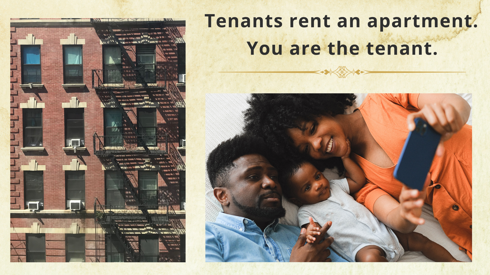

Adult ESL Housing Module
This instructional module was developed as part of a federally funded, year-long cultural orientation program for adult English language learners at Dorcas International Institute of Rhode Island, a nonprofit organization serving immigrant and refugee communities in Providence, Rhode Island.
The program supported multilingual adult learners as they developed English skills and learned how to navigate everyday systems and experiences in the United States.
This project demonstrates instructional design, visual learning strategies, accessible communication, and the development of instructor-led learning materials for diverse adult learners.
I managed and delivered the year-long cultural orientation program and designed and facilitated instructor-led learning experiences for multilingual adult learners.
My responsibilities included:
Through this process, I translated complex, real-world information into accessible learning experiences designed to support adult learners as they adapted to life in the United States.
The learners were multilingual adult English language learners from diverse cultural, educational, and linguistic backgrounds.
Many learners were developing English proficiency while simultaneously learning how to navigate unfamiliar systems, services, and everyday experiences in the United States.
The focus of this module was translating essential housing information into a format that was clear, manageable, and meaningful for adult learners navigating unfamiliar systems in the United States.
Because learners were processing new concepts, terminology, and expectations, the information needed to be introduced in a way that reduced complexity and supported understanding.
By the end of the housing module, learners were expected to:
To address learner needs, I developed visual learning materials that emphasized clarity, consistency, and accessibility. The Canva-based modules used minimal text, supportive imagery, and a consistent visual structure to help learners focus on key concepts.
The materials functioned as instructor-led learning supports rather than standalone presentations. During each session, I guided learners through the content, provided explanations and examples, facilitated discussion, and used interpreter support when additional language clarification was needed.
This approach focused on breaking complex information into manageable sections, using visual supports to reinforce understanding, and helping learners connect new concepts to practical situations they might encounter in daily life.
The following examples demonstrate how visual design strategies were used to introduce essential housing concepts and support practical learning for adult English language learners.
1. Foundational Vocabulary
Introduced essential housing vocabulary using visual supports and simple sentence structures.

2. Essential Personal Information
Introduced key address information to support everyday communication and independence.